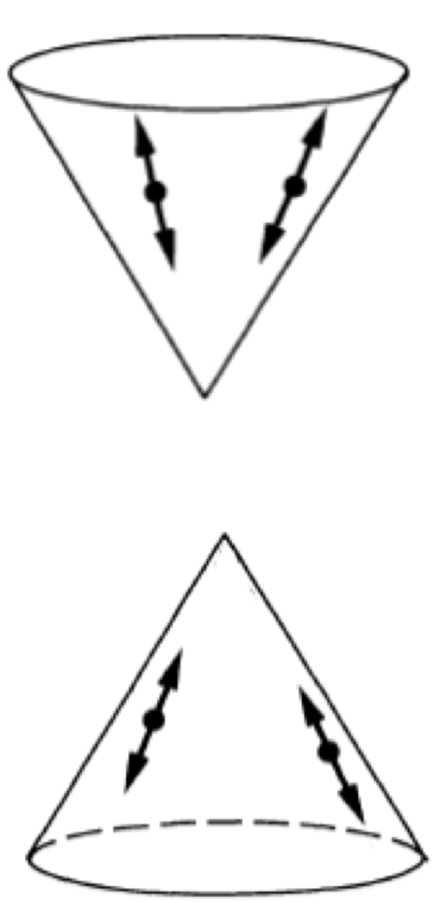

Study
学部
現在の素粒子物理学において大きな成功を収めている標準理論には、重力を扱えないという大きな課題があり、その課題に対して一般相対性理論と量子力学を統一した理論によって重力について理解されることが期待されている。
現代の量子力学は標準的定式化と呼ばれ、ミクロな現象の定量的な扱いを可能にし画期的な成功を収めている一方で、ミクロな現象をマクロな現象と結びつける量子古典対応には直感的イメージにつながる数学的定式化がなく、代わりに抽象代数を用いて物理概念と対応させる取り組みがある。
学部の卒業研究では、一般相対性理論と量子力学の統一を代数学的な観点からどのようにアプローチできるのかを提案した。
大学院修士課程
深層学習を用い、日本を中心に世界中の国々が参加して建設計画が進行している国際リニアコライダー計画（ILC）で用いる、素粒子のジェット再構成アルゴリズムの開発を行っている。既存のアルゴリズムでは、実験データの評価に人の手によって定められた閾値が用いられている。これに対してこれまでに無かった深層学習を用いたアルゴリズムを開発することで、評価性能の向上と解析時間の短縮を目指している。
また我々のグループではILCの検出器における電磁カロリメータで使用するセンサーに対して粒子識別精度の高いシリコンセンサーの導入を提案しており、その開発に向けた研究を日本・欧州の実験施設を用いて行っている。
Presentaion
その他の活動
Last updated: 17.Aug.2022
Email: onoe[at]epp.phys.kyushu-u.ac.jp


© 2022 Tomoki Onoe